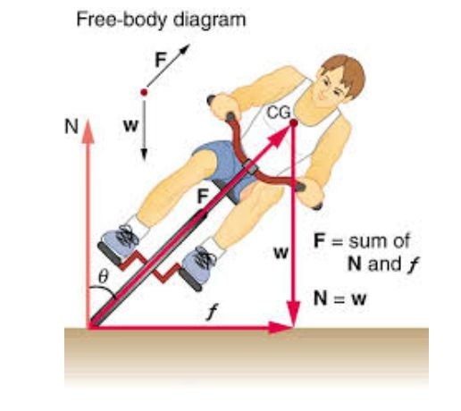

Centripetal force is a fundamental concept in physics that explains why objects move in circular
paths. It is the force acting on a body moving in a circular path, directed towards the center
around which the object moves. This inward force ensures that the object remains on its curved
trajectory rather than continuing in a straight line.
Formula
As with any other force, the centripetal force follows Newton’s Second Law:
\[ F_C = m \cdot a_c \]
- \( F_C \): centripetal force
- \( m \): mass of the object
- \( a_c \): centripetal acceleration of the object
Centripetal acceleration is defined by the following formula:
\[ a_c = \frac{v^2}{R} = \omega^2 \cdot R \]
- \( v \): velocity of the object1
- \( R \): radius of the circular path
- \( \omega \): angular velocity of the object
1Usually the tangential velocity of the object, except in some problems that involve rolling with sliding.
Examples of Centripetal Force
- The tension in the rope on a tetherball serves as the centripetal force keeping the ball
in circular motion around the pole.
- Friction between both wheels and the floor provides the necessary centripetal force for
a biker to turn in circles.

- The gravitational pull of Earth on the Moon acts as the centripetal force maintaining the
Moon's orbit around Earth.
Note: For further understanding of the topic, check out the next topic "Circular Kinematics.”